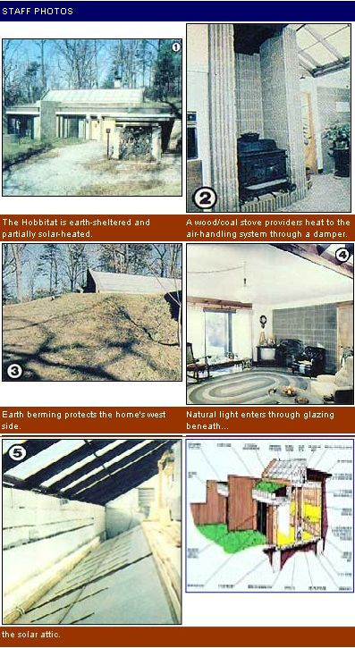

While most people living in conventional dwellings are hard pressed to cut their energy costs without spending a small fortune doing it, these North Carolina folks have a down-to-earth solution: They...
Nearly a decade ago-when the general public had yet to be convinced that earth-sheltered dwellings could be sound investments-about the only people who bothered with underground structures were either progressive architects who often had to "overdo" their designs (and hence raise construction costs) in order to suit the tastes of their usually affluent clients, or truly versatile folk who [a] more than likely couldn't afford a contractor, let alone an architect, but who [b] likewise realized the advantages of subterranean living, and so went ahead and built their own shelters on a "learn asyou go" basis.
These days, however, earthcovered residences are becoming more popular ... and it's not unusual for the informed "average citizen" to consider building an underground abode.
One such person is Lloyd Remington, a professor of chemistry at the University of North Carolina's Asheville campus. Dr. Remington began building the home in the accompanying photos (he calls it "The Hobbitat") back in October of 1977, and moved in during May of the following year. Admittedly, the house was never intended to be either a public showplace or a demonstration of the latest in gadgetry, but the doctor feels that he has accomplished his goals: He built a pragmatically un conventional home which could nonetheless boast such traditional features as affordability, security, and soundness.
Dr. Remington knew all the time what sort of "return" he wanted to realize from the time and resources invested in his project, and felt that "going underground" was the simplest and least expensive way to achieve his aims. Put directly, he figured it would be sheer insanity to lay out money to build a home, only to continue spending substantial sums- year after year-to maintain the structure and its interior comfort level.
All told, the professor based his decision to "dig" on four factors:
[1] The earth provides a stabilized energy "sink" to help buffer the extremes of seasonal climate.
[2] An "in-ground" dwelling affords the ultimate protection from what might be the least recognized variety of thermal "drain" in existence ... the wind chill factor. (This element affects buildings as well as people and is a basic part of the heat flow principle within any structure.)
[3] Insurance premiums on an underground house are usually lower than those for more orthodox residences, because there's much less danger of damage to the structure from fire, storms, vandals, or even fallen trees. In fact, the underwriters of Lloyd Remington's policy gave the house a "Triple A" rating ... a designation that's shared-according to the doctor-by only one other home in his area.
[4] An earth-covered structure can furnish adequate shelter in the unlikely event of a nuclear crisis. Even though Professor Remington (who taught a survival course as part of the Civil Defense program years ago) points out that his home wasn't primarily designed as a fallout shelter, he and his family could "make do" in it if necessary ... and will always enjoy the "bonus" thermal protection provided by the building, while remaining secure in the knowledge that they are relatively safe from any intentional or accidental dispersion of radiation .
Since Dr. Remington planned to keep his overall costs as low as possible, he essentially acted as his own contractor ... which, practically speaking, meant that he chose (and later paid) his own subcontractors, and coordinated their work Sched ules. He also retained the services of a local architect, who provided the engineering and design skills necessary to assure that the final product was safe and aesthetically pleasing.
Then, when much of the "homework" was done, he approached the community's financial institutions-armed with realistic figures and professional blueprints-and was immediately successful in obtaining the promise of funds: "I didn't run into any banks that weren't interested ... in fact, some were very partial to the project, and willing to bend a few rules in order to see it completed."
And Lloyd Remington feels he got more than his money's worth when it came to the job performed by his building contractor. That individual and his crew were enthusiastic about the venture they were involved in, and put in a lot of extra time to see that the job was done correctly.
The bottom line-as close as the professor can estimate it-on the two-bedroom, 1,927-square-foot house came to a bit over $80,000, or about $43 a square foot ... a high figure for the western North Carolina area, but not out of line in many other parts of the country, especially when one realizes that the structure is essentially "overbuilt" throughout.
For the most part, the Remington home was constructed along lines common to many subsurface dwellings, but it has some interesting variations. The building site sloped toward the southwest, so the designer took advantage of the natural lay of the land and positioned the structure to face due south ... eliminating the need for backfill berming except for that done on the west end of the dwelling. Then the main excavation was made to a maximum depth of 15 feet, and the driveway was graded to meet that level.
Rather than pour the foundation and footing as one, the builders chose to go with a "floating slab" design, in which the walls are supported on a stout perimetrical footing ... and the foundation itself rests within , on top of a layer of gravelover-polyethylene.
The 2' X 4' footing holds up block walls with filled, reinforced cores (except for those in the non-load-bearing rear wall, which have alternating poured and vermiculite-packed centers), and the roof panels are prestressed concrete ... laid east-to-west, half-lapped 1/4" and caulked at their lateral joints, and covered with a poured, 2 to 6" graded slab which is tied into the walls by means of 3/4" reinforcing bar all around. (All told, there are over 200 tons of concrete in the structure!)
In order to guarantee a comfortable, moisture-free environment, Dr. Remington virtually enshrouded his house in a combination of rubber, styrofoam, and a locally made foundation drainage material. First, the completed walls and roof were covered with a 1/10"-thick layer of cured-in-place butyl rubber waterproofing. Next, panels of 2" and 3" styrofoam insulation were fastened to the structure's sides and top, respectively. Then a seepage pad (Enka. drain, made by the American Enka Company, Dept. TMEN, Enka, North Carolina 28728) was placed over all of the insulation board and the drainpipe which rests against the exterior face of the footing. Finally, the entire structure-and its insulated "raincoat"-was covered with earth, to a depth of 30" in the front and 48" at the rear.
Because the Asheville area isn't known for its temperature extremes, Professor Remington chose an air-to-air heat pump to function as the backup system in his all-electric dwelling ... partially because such a unit can be inexpensive to operate if used intelligently, but mainly because it included an ideal forced-air handling network that allows the distribution of naturally tempered currents.
The Tar Heel Stater, you see, has incorporated a solar attic into the upper part of his home's south-facing wall and entranceway. Originally, the plan called for the installation of 18 parabolic collectors to provide space heating and domestic hot water... but such "luxury" wasn't within the final budget. Instead, Remington covered the exposed side of the attic with corrugated Filon glazing, framed out its lower surface with 1 X 6 "ribs" which support flat sheets of Kalwall, then tied the huge "hotbox" into his air handling system, using a thermostatically controlled fan. Not only does the massive collector provide a fair amount of heat-usually enough to supply the entire home during the daylight hours after 10:00 a.m. or so on a winter day-but it's also the source of plenty of more-than-welcome light for the living area below. (The professor soon plans to set up one or two solar panels in the enclosure to furnish hot water.)
Additionally, to supplement the other two heat sources, the Remington family uses a combination wood-and-coal stove... usually only when the outside temperature dips below 20°F, which is beyond the heat pump's operational range of efficiency. Furthermore, a manually controlled damper, built into the bottom of the air distribution duct and located at the top of a "channeling" shaft just above the woodburner, allows normally stagnant ceiling warmth to collect-for later use-in the insulated air supply chamber.
During the warmer months, the Remingtons usually enjoy a comfortable environment simply because they're essentially living "in the earth" ... but, should tem peratures within the home creep upward, a louvered fan installed at each end of the solar attic can "sweep" that area clean of heat (the blowers can also be left closed , and just the air delivery system of the heat pump activated, with the house windows open ... an alternative that has proved to be reasonably cost-effective). But if the ambient air is uncomfortably warm, the Remingtons also have the option of utilizing an earth-cooled air duct (merely a 20-foot length of 18"-diameter culvert pipe buried in the soil), which feeds into the home's ventilation system to provide sup. plementarycooling.
Admittedly, it would be pretty hard for many folks to justify spending the amount of money that the Remingtons did ... especially if the people had their sights set on a similar-sized conventional dwelling, which might cost onehalf to two-thirds as much. But when you consider the energy savings to be had, it appears that the professor made a good investment. He has kept accurate temperature and utility bill records for most of the house's history, and calculates the minimum total power usage to be below 1,000 KWH per month, and the maximum 2,300 KWH. The average consumption for any "heated" or "cooled" month figured out to about 1,500 KWH, and the most spent on conventional heating alone was about $38 for a 30-day period. Remington's total heating costs for the first winter-for electricity, wood, and coalcame to ascent $180.
Thus the monthly savings-added to the reduced price of maintenance and insurancecould make the long-term ownership of such a subterranean dwelling quite attractive. If you're considering the construction of an earthsheltered home, there probably isn't a better time to "get ,with it" than right now!
|
 |
|
|